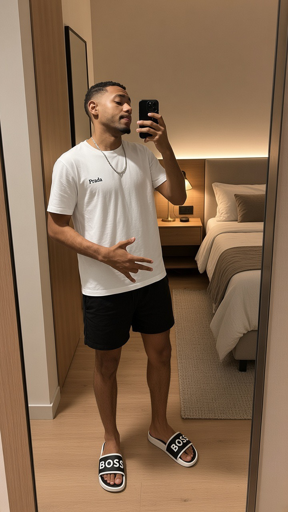

BEM-VINDO AO MEU PORTFÓLIO
Olá, sou Shady Bachir
Estudante de Tecnologia e Eletricidade Industrial
Este é um pequeno trabalho para apresentar um pouco sobre mim, os meus estudos e as minhas habilidades

Sobre Mim
Sou estudante e estou a desenvolver os meus conhecimentos na área de eletricidade industrial, tecnologia e informática Gosto de aprender coisas novas e de colocar em prática aquilo que estudo
Este portfolio vem por este meio mostrar o que e um portfolio de verdade
Minhas Habilidades
Eletricidade Industrial
Conhecimentos básicos de instalações e circuitos de eletricidade industrial
Mecânica Industrial
Aprender alguns componentes mecanicos futeis
HTML e CSS
Criação de páginas web simples, organização de conteúdo
Aprendizagem
Interesse em aprender novas tecnologias e melhorar os meus conhecimentos futuramente
Meu Período Estudantil
1 à 7 Classe
Conclusão da 1 classe até à 7classe.
8 à 10 Classe
Conclui a 8 classe até à 10classe.
Mecânica Industrial
Conclui 6 meses de formação de Mecânica Industrial no Instituto Náutico.
CV3 - Eletricidade Industrial
Conclui o CV3 do curso de Eletricidade Industrial no ITC - Instituto de Transportes e Comunicações.